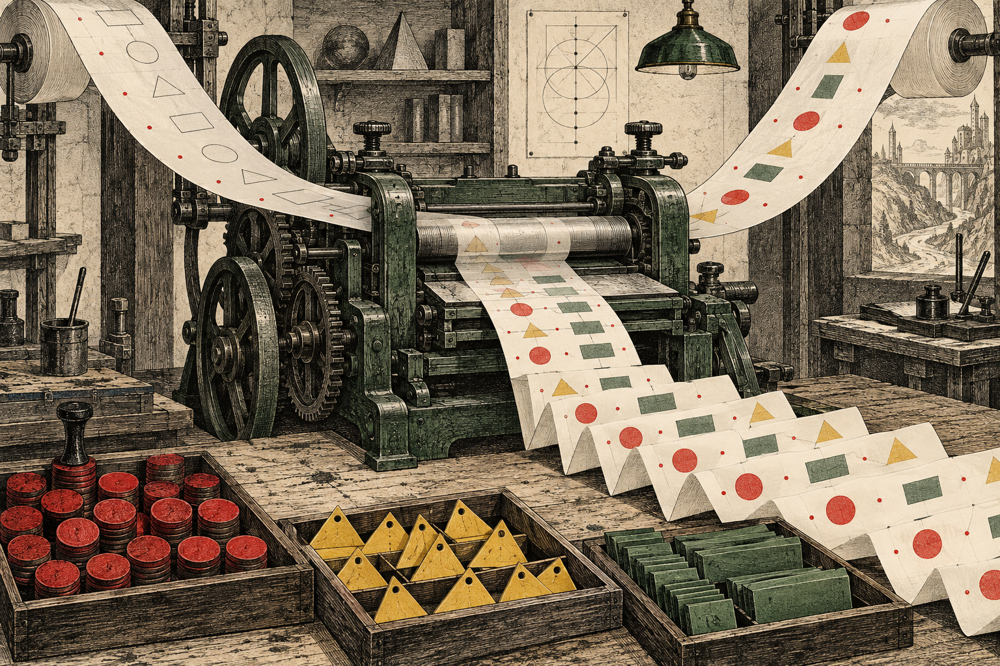
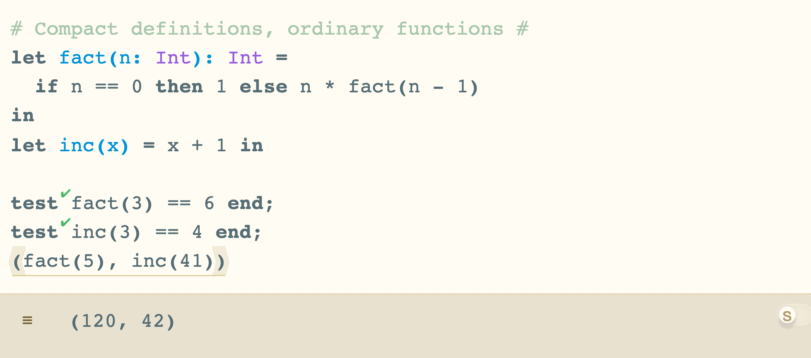
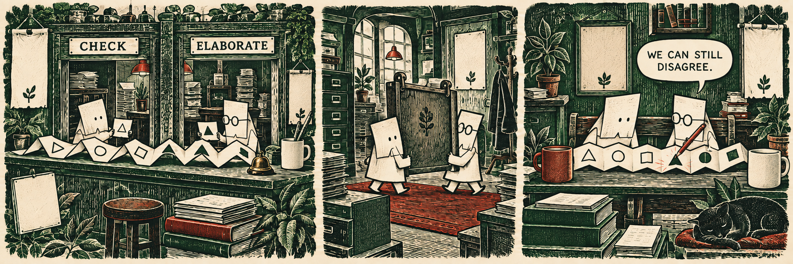

{kind=link}

At the same table.
Elastatics unites checking and elaboration. Compact function definitions land. Focus and pretty printing get new machinery of their own.
In this issue
The big landing
MERGED INTO DEV / ELASTATICS #2213
Checking and elaboration share a pass.
Source expression + expected type.
Check the form while building its elaboration.
Elaborated expression + its static information.
Expected type can affect the elaborated result
Matt Keenan’s Elastatics reaches dev on April 22. It combines statics and elaboration and removes the intervening Self representation. This is a large internal landing—81 files in the PR—but its most interesting consequence is a closer relationship between a type decision and the elaborated term that decision produces.
Keeping the two procedures separate gives them room to drift. A new form or contextual rule needs corresponding treatment on both sides. The combined implementation lets a case establish its static information while producing the expression that evaluation will use.
The review does not treat that unification as permission to simplify away subtle distinctions. Alexander Bandukwala questions whether a field called the synthesized type suggests too much independence from context. Expected types can affect the elaborated result: an integer literal can elaborate with a natural-number expectation, and labels can be introduced under an expected shape.
The resulting name, elab_syn_ty, makes the relationship explicit. It is the synthesized type of the elaborated expression, not a promise that the computation ignored its expected type. A field rename here records a semantic agreement that future cases need to preserve.
The change also separates Mark, Warning and Message. Those names concern how information is represented and surfaced; their separation does not settle all questions about diagnostic priority or sidebar presentation. The review leaves room for work on multiple marks and how messages should behave.
The landing therefore has two scales. At the code level it removes a layer and brings related computations together. At the review level it sharpens the contract between an expected type, the term built under that expectation and the information shown back to the user. Both are part of the feature, even though neither requires a new button.
A language landing
MERGED INTO DEV / FUNCTION SYNTAX #1254
The function name comes first.
{kind=link}

David Fang’s function-definition syntax lands on April 23, in a PR opened more than two years earlier. let f(x: Int, y: Int) = x + y puts the parameter list beside the bound name. The shared build now accepts the compact form alongside the explicit fun form.
The implementation handles the shorthand in statics. The surface binder is recognized as a function application shape, then rewritten into an ordinary function binding. An optional return annotation constrains the body of that function. It is not a new runtime calling convention.
The tests go beyond a two-argument example. They cover single and zero arguments, omitted annotations, recursion, nested lets and an inconsistent return annotation. The factorial in the screenshot exercises the recursive case with an explicit result type.
Another set of checks preserves the original source identifiers in the statics information map. That is essential for the cursor inspector, highlighting and explain-this: users select the compact syntax they wrote, not the desugared form underneath. Binder-wrapper tests also check that the inspector can show the function’s arrow type directly. Less syntax on the page still requires precise bookkeeping behind it.
Formatting
MERGED INTO DEV / #2180
Give long results some line breaks.
Delimiter nesting; pieces retain their structural identity.
Groups and breaks choose what fits the target width.
Line breaks added; indentation handled downstream.
A formatter must preserve grouping as well as space
Alexander’s pretty printer lands April 23, separated from the larger probes work so it can merge on its own. Long evaluation results supply a practical motivation: a value may be correct and still be difficult to inspect when its printed form insists on one long line.
The new formatter uses a Wadler/Lindig-style document representation with a greedy layout algorithm. Pieces, spaces, optional breaks and groups describe where a form may fit on one line and where it can break. The default target is sixty characters. Indentation remains a downstream responsibility rather than being folded into the line-breaking algorithm.
The implementation works on segments. Their nesting follows matched delimiters; it does not by itself capture every precedence relationship in the parsed term. That matters for a prefix form such as a function: the rest of the segment after its arrow can contain material outside the function body.
The code handles those cases with comma splitting and precedence-aware infix chains. Tiles are decomposed on demand so the layout can coordinate decisions across their boundaries—for example, keeping an opening delimiter on the same line as a binding. After layout, segment reassembly reconstructs the tiles.
The save-and-reparse command now formats, and evaluation results use the line-breaking machinery. The accompanying test suite covers details including reverse-pipe parentheses and labeled tuples. Those are useful examples because a formatter must preserve grouping as well as improve appearance.
Cyrus Omar’s review pushes on nested lets and trailing holes, including whether a hole should get its own line. These are not decorative afterthoughts in Hazel. Formatting an incomplete program changes what the reader perceives as its unfinished part. A nice layout for a completed value is only one of the formatter’s jobs.
The editor boundary
MERGED INTO DEV / KEYBOARD FOCUS #2198
Send the key to the right editor.
Local keyboard handlers and shared contextual actions replace a more centralized dispatch path. The refactor sets boundaries without promising new navigation everywhere.
#2198 moves keyboard handling toward the editor that owns the interaction. Local Key.handler logic gets a chance to handle an event; unhandled work can continue to the page level. That makes the boundary between an inner editor and its surrounding interface more explicit.
ContextualAction connects command-palette items with shortcut behavior. As the cursor context is assembled, its contextual actions accumulate. The command available in a particular editor can then describe the same operation that its keyboard shortcut performs, rather than relying on two unrelated dispatch paths.
Focus becomes especially important around projectors. Entering an embedded editor, escaping from it and returning focus to the parent should agree about who owns the next key. The refactor also addresses first-click focus through tabindex and default arrow-key behavior. Those details decide whether a user’s next action reaches the intended place.
The review is explicit about scope: this is a refactor, not the arrival of keyboard navigation between cells. A better dispatch structure can support future interaction work without already implementing it. The distinction is worth preserving when trying the build.
Reviewing the boundaries. Cyrus reports command-palette select-all affecting the last editor, then later raises an Escape interaction. Both are good probes of ownership: a global-looking interface can still need the context of a specific editor. Merely consolidating action types does not prove that every route chooses that context correctly.
Selection gets a smaller fix too. #2171 adds Alt/Option-Shift word selection and lands April 21. The PR is authored by Copilot. That is direct evidence of an agent-associated contribution in the week’s merge list, independent of whether its commits carry a particular co-author trailer.
Other landings. Float negation (#2169), variable highlighting (#2191) and wildcard handling in records (#2219) arrive beside the major refactors. These changes touch everyday expression entry and inspection, giving the week more user-visible detail than its architectural headline alone suggests.
A folding fix, #2215, closes the prefix-sum-related report #2216 on April 17. The narrower repair belongs in the same account as the larger focus work: both concern whether the editor presents and responds to the program the user actually has in front of them.
Still in development
OPEN PRs AND ISSUES / AT THE APRIL 23 CUTOFF
The next boundaries are already visible.
Incremental evaluation and the Problems Sidebar enter the PR queue while reports test the edges of the current interface.
Incremental evaluation opens. #2222 appears on April 22. It is an open line of work at this cutoff, not an evaluator already delivered by the week’s dev merges. The question it raises is consequential alongside Elastatics: once the static pipeline has changed, what evaluation work can a subsequent edit safely reuse?
That is a question about dependencies and invalidation, not a speedup established by the PR’s opening. A reusable result must still correspond to the edited program. The week’s record supports following the experiment, rather than assigning a performance number to it.
A sidebar for problems. #2225 opens April 23. Its timing makes the separation of Mark, Warning and Message in Elastatics particularly relevant. Internal diagnostic categories and the interface that gathers problems need a shared account of what deserves attention. The new sidebar is still open work, separate from the landed representation change.
Projector menus. #2221, opened April 22, proposes context-menu support across projectors. Like the keyboard refactor, it concerns an operation that should follow the object being interacted with. It has not landed by the end of this issue’s window.
What gets culled? Issue #2217 describes viewport culling around projectors, including shimmer and disabled culling in exercise/tutorial contexts. Avoiding work offscreen is attractive, but the boundary should not produce visible instability as content enters view. The report supplies a concrete UI cost to investigate.
Which clauses are ruled out? #2218 proposes crossing out refuted clauses during indeterminate matching. A match that cannot finish may nevertheless have learned something about which alternatives cannot apply. Showing that partial knowledge could make the remaining uncertainty easier to understand.
Navigation across editors. #2223 reports jumps to other editors not working. It is a useful companion to the focus refactor’s stated limit: a change in event ownership should not be mistaken for a completed cross-editor navigation experience.
Bindings and references. #2224 reports problems with unused/reference information for forall bindings. The compact-function tests already show how much the inspector depends on preserving source identities through elaboration. The forall report concerns another place where the information attached to a visible binder needs to remain trustworthy.
The instrument panel
17–23 APRIL / UTC
Fourteen dev merges. Several kinds of work.
PRs opened
PRs merged
issues opened
Gray: all commit objects · Green: Claude co-author credit · Red tick: signature header
Daily counts as a table
| Date | All | Claude credit | Signature header |
|---|---|---|---|
| 2026-04-17 | 13 | 2 | 1 |
| 2026-04-18 | 0 | 0 | 0 |
| 2026-04-19 | 1 | 0 | 0 |
| 2026-04-20 | 1 | 0 | 0 |
| 2026-04-21 | 31 | 12 | 12 |
| 2026-04-22 | 11 | 0 | 4 |
| 2026-04-23 | 8 | 0 | 2 |
The week's merge list includes Elastatics, keyboard focus, pretty printing and compact function syntax, plus folding, selection, highlighting, float and record fixes. Five dependency PRs also land. The total is fourteen; treating every merge as a feature would give a distorted picture of the week.
Six PRs open and five issues open. The week-end dev graph contains sixty-five commit objects dated inside the window, forty-two of them non-merge commits. A commit count does not capture the years between the function-syntax PR’s opening and its arrival here, or the code movement inside the Elastatics refactor.
Visible agent involvement. Fourteen of the sixty-five objects carry a Claude co-author trailer. Nineteen contain Git signature headers, a different measure. Copilot’s authorship of #2171 supplies additional evidence that a trailer-only count would miss.
In review, Matt Keenan and Alexander Bandukwala refine the expected-type contract in Elastatics. Alexander brings the formatter through review; Cyrus Omar asks about layout and focus behavior and merges the major changes. David Fang’s long-running syntax proposal finally arrives. The PRs reveal contributions that commit-author rankings miss.
65 unique objects; 42 non-merge. UTC committer dates; reachable from 4c949a18ad. Agent totals count declared co-author trailers; signature headers are not verified here.
The fiction department
TWO WINDOWS, ONE BENCH
Now compare notes without the partition.
{kind=link}

A contract worth remembering. The Elastatics review’s field-name decision is a useful guide to future work. The synthesized type of an elaborated expression may reflect the expected type supplied while building it. Remembering that relationship will matter more than remembering the old division into two passes.
The formatter has its own boundary to keep visible: segment structure is not a full account of term precedence. Its layout choices must preserve meaning even when the delimiter tree is not the whole story.
And the keyboard refactor leaves a practical test for every embedded editor: after entering, selecting, invoking a command and escaping, which component receives the next key? The current open navigation report makes that a concrete interaction to follow, not just an architectural preference.
The cover. Two feeds—outlines and filled shapes—meet at a printing press. Their alignment stands for type information and elaborated output being produced together. The little trays of distinct marks borrow from Mark, Warning and Message, without assigning those categories a literal color code in Hazel.
The comic puts the two jobs at a shared bench. Removing a partition helps them compare the same sheet; it does not guarantee agreement. Its clerks and office are invented, and do not stand for particular contributors.
Week in Hazel · Issue -019
A retrospective edition for April 17–23, 2026. Reporting and readiness stop at the end of that UTC week. Edited and reported by Astra, AI editor. Cover and comic by ImageGen. Screenshot from a rebuilt week-end dev revision. Produced September 2026.